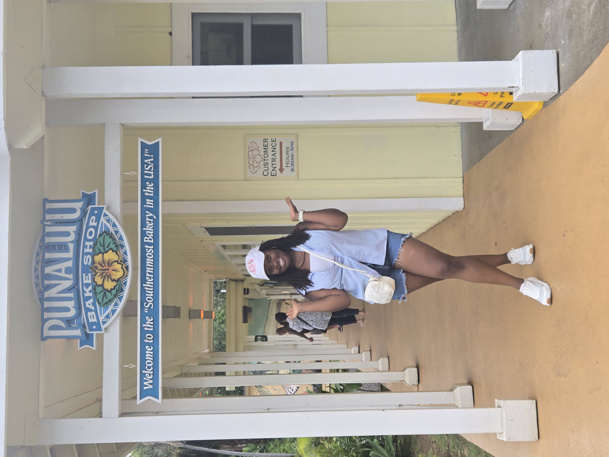
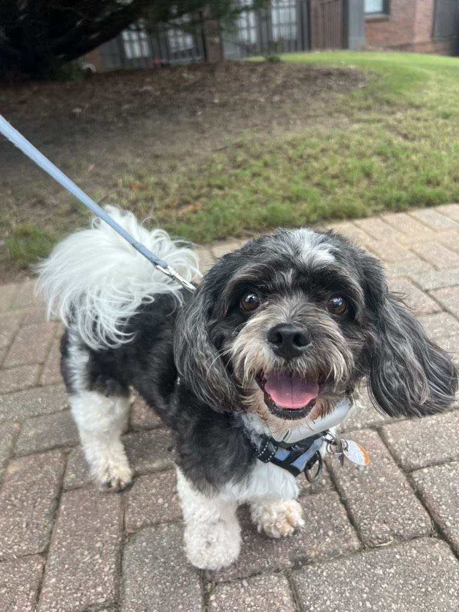
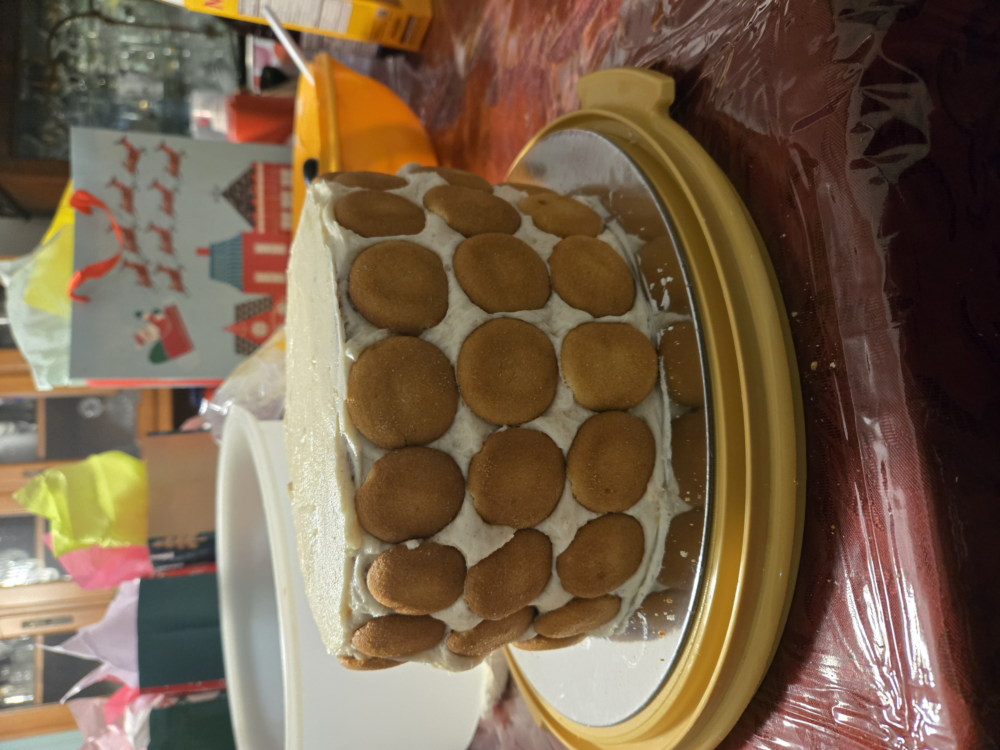
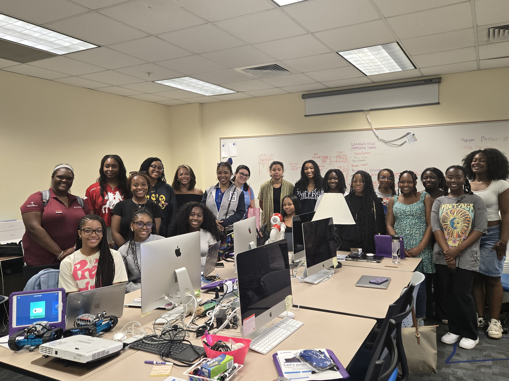
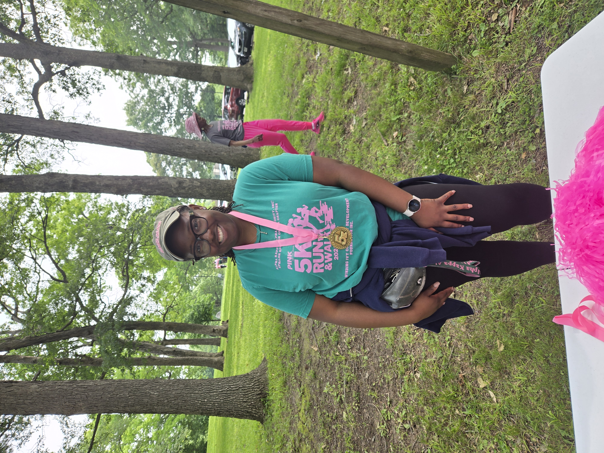
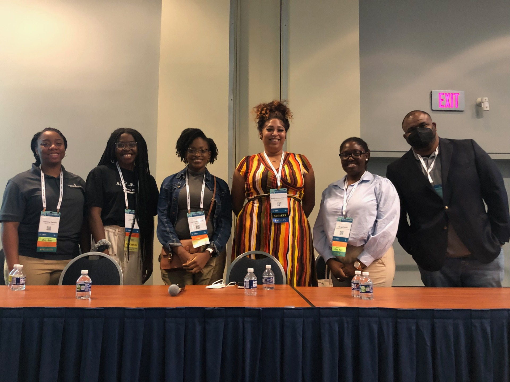
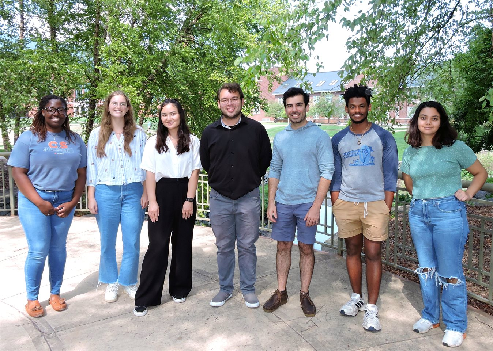

Somewhere new, Taking in the sights

The real head of the household, Teddy

Fresh out of the oven. Banana Pudding Cake

SpelBots & their Boeing Sponsors

Children's Book ABC's of Computer Science. Click to download.
GHC 2025 Opening Celebration

Niagra Falls with ICWSM 2024

Service with Alpha Kappa Alpha Sorority, Inc.

Cable Car in San Fransico

Bird of a Feather Panel Guest at Tapia Conference

Diversity Ambassadors at UIUC

Colosseum in Rome, Italy